Common Problems
FB Post Search
Scaling Reads
Scaling Writes
Understanding the Problem
🔍 What is Facebook?
Facebook is a social network centered around “posts” (messages). Users consume posts via a timeline composed of posts from users they follow or more recently, that the algorithm predicts they will enjoy. Posts can be replied, “liked”, or “shared” (sometimes with commentary).
For this problem, we're zooming in on the search experience for Facebook. This question is primed for infrastructure-style interviews where your interviewer wants to understand how deeply you understand data layout, indexing, and scaling.
We're going to assume our interviewer has explicitly told us that we're not allowed to use a search engine like Elasticsearch or a pre-built full-text index (like Postgres Full-Text) for this problem.
This practice of disallowing specific technologies is common enough that you should be prepared for it. The intent here is to test your knowledge of the fundamentals of data organization and indexing, rather than the specifics of a particular technology. Yes, this actually happens!
Functional Requirements
For our requirements, we not only want to get an idea of what the system will do but also what we don't need it to do. While explicitly enumerating out-of-scope requirements isn't necessary, asking detailed questions about what functionality might be included will help to make sure you avoid any last-minute surprises from your interviewer.
Core Requirements
- Users should be able to create and like posts.
- Users should be able to search posts by keyword.
- Users should be able to get search results sorted by recency or like count.
Below the line (out of scope)
- Support fuzzy matching on terms (e.g. search for "bird" matches "ostrich").
- Personalization in search results (i.e. the results depend on details of the user searching).
- Privacy rules and filters.
- Sophisticated relevance algorithms for ranking.
- Images and media.
- Realtime updates to the search page as new posts come in.
By de-scoping personalization, we dramatically simplify the problem and make caching much more effective. It's a good idea to ask if it's a firm requirement for the system!

Non-Functional Requirements
In infrastructure-focused questions, non-functional requirements tend to take center stage as your interviewer is looking to see how you identify and solve bottlenecks. For this problem, we know we want search to be fast but we also need to think about how posts are created and made searchable.
Core Requirements
- The system must be fast, median queries should return in < 500ms.
- The system must support a high volume of requests (we'll estimate this later).
- New posts must be searchable in a short amount of time, < 1 minute.
- All posts must be discoverable, including old or unpopular posts. (we can take more time for these)
- The system should be highly available.
If you have a lot of data in your system, there's a good chance you'll have "hot" and "cold" data. Hot data is readily accessed and needs to be served quickly, often from memory. Cold data is infrequently accessed and can be served from disk, a remote database, or even tape.
In this case the non-functional requirement that we can take more time for old or unpopular posts is foreshadowing a potential design decision later in the interview.
Here's how these might be shorthanded in an interview. Note that out-of-scope requirements usually stem from questions like "do we need to handle privacy?". Interviewers are usually comfortable with you making assertions "I'm going to leave privacy out of scope for the start" and will correct you if needed.
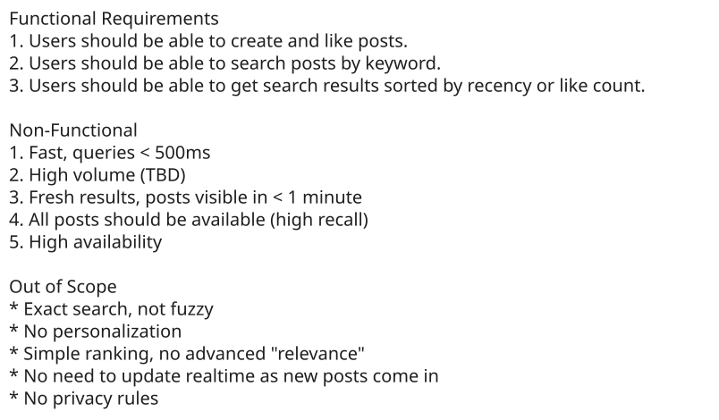
Requirements
Scale estimations
For this problem, it's obvious we're dealing with a large-scale system. What we need to know in order to make informed design decisions is a few parameters: how much data are we storing, how often are we writing to the system, and how frequently are we reading from it?
A common mistake here is to fixate on the search aspect of this problem and assume reads are the most important part. So let's do a bit of estimates to come up with ballpark numbers which will help us decipher the nature of the system we're designing.
We'll assume Facebook has 1B users. On average each user produces 1 post per day (maybe 20% do 5 posts and 80% do 0 posts) and Likes 10 posts. For ease of calculation, we'll assume 100k seconds in a day (rounding up for convenience).
First let's look at the volume of writes:
Posts created: 1B * 1 post/day / (100k seconds/day) = 10k posts/second
Likes created: 1B * 10 likes/day / (100k seconds/day) = 100k likes/secondNoteworthy here is that the number of likes is significantly more than the number of post creations. I'm going to note that for my interviewer so they see how I'm thinking about the problem.
Now let's look at reads.
Searches: 1B * 1 search/day / (100k seconds/day) = 10k searches/secondWhile this is a lot (and may burst the 10x this value or more), our system is write-heavy vs read-heavy. Another thing to note.
Finally let's evaluate the storage requirements of the system. First let's assume Facebook is 10 years old and that the full post metadata is 1kb (probably an overestimate).
Posts searchable: 1B posts/day * 365 days/year * 10 years = 3.6T posts
Raw size: 3.6T posts * 1kb/post = 3.6 PBWow, that's a lot of storage! We're going to need to find some way to constrain this in our search system.
For this particular problem, doing these estimations helps us to determine the nature of the design. Reflections like those above help your interviewer understand how your estimations are affecting your design and demonstrate your experience - don't estimate for the sake of estimation!
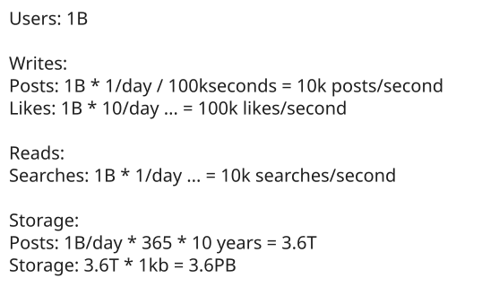
Scale Estimates
The Set Up
Planning the Approach
As we progress in the interview, we'll want to refer back to the requirements to ensure that we're covering everything we established we need to cover. We'll solve each of our functional requirements one by one and then come back to address scale and our non-functional requirements as deep-dives.
Defining the Core Entities
We'll start by identifying the core entities we'll be working with. Fortunately, for this problem, the core entities are very simple:
- User: This entity creates posts.
- Post: This is the thing that we're searching! It has a content, is created by a user, and implicitly has a like count.
- Like: Likes are created when a user likes a post, but for this problem we mostly care about the count of likes.
We don't need to spend extra time here because the entities in this problem are purposefully simple, let's keep going.
API or System Interface
Getting a handle on the APIs for our system is going to provide a scaffolding for the rest of our solution. Most of the time, our job is to make the connection between APIs and storage systems or dependencies, and this case is no different.
Our APIs are straightforward. We have two paths: a query path for searching and a write path for creating posts and likes.
In a real system we might be consuming from a Kafka stream or some other event bus for both of these events, but for clarity we'll create separate API endpoints for each and can let our interviewer know that we'd elect to merge these into the rest of the system as appropriate.
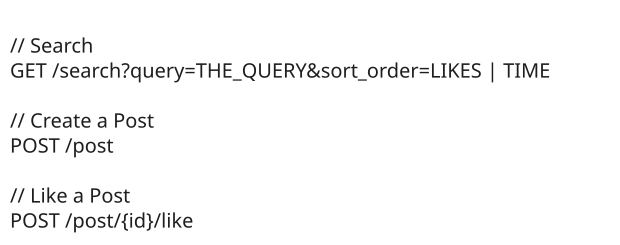
API
With these APIs defined, we can start to see the shape of our system. Writes come in via the two write endpoints and are written to a database. Queries come in via the search endpoint and read from the database. Good start!
High-Level Design
Remember, for our high-level design we're walking through our functional requirements and trying to build a simple system that satisfies them before we go deep into optimizations in our deep dive. Starting simple will avoid rabbit-holing on unimportant pieces and by covering our requirements quickly we can guarantee the system doesn't have any missing pieces.
1) Users should be able to create and like posts.
Our first requirement is on the write path, allowing users to create and like posts. We need to be able to accept these calls and write them to our database.
Our search system is just a part of the larger social network product, so it's reasonable to assume the existence of an internal "Post Service" and "Like Service" that are responsible for taking client requests. Since we're only designing search, we take for granted that these other services exist and are working as expected.
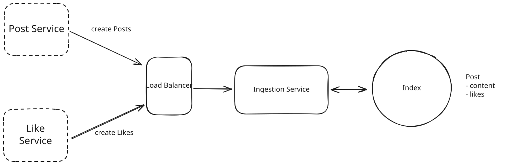
Simple ingestion-side design
While we had previously calculated that the scale of Likes and Post creation was very different, the operation of our Ingestion service is very simple at this time, so we'll leave it as a single service and note the potential concern to our interviewer.
It's a good idea to acknowledge for your interviewer that this solution is obviously over-simplified and that you'll come back to solve its problems. Interviewers are going to be critiquing your design and looking for flaws - the longer you leave them with unacknowledged issues, the more they assume you didn't see them!
2) Users should be able to search posts by keyword.
Next, we need to allow users to actually search. To do this we need to set up the read leg of our system. We'll start by adding the basic machinery necessary to serve the user requests: an API gateway for authentication and rate limiting and a horizontally scaled search service which accepts the request then queries the index.
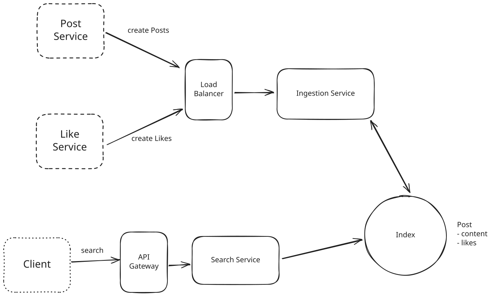
Allow Search
The Index is doing a lot of the work for search here. Let's talk about that a bit more. In order to allow users to search posts by keyword, we need to be able to find all of the posts which contain that keyword. With trillions of posts and petabytes of data, this is not a small feat! What are our options?
Approach
The naive solution to this problem is to keep all of the posts in a relational database and use a query like SELECT * FROM Posts LIKE '%$keyword%';. This would technically return the correct results for a given query!
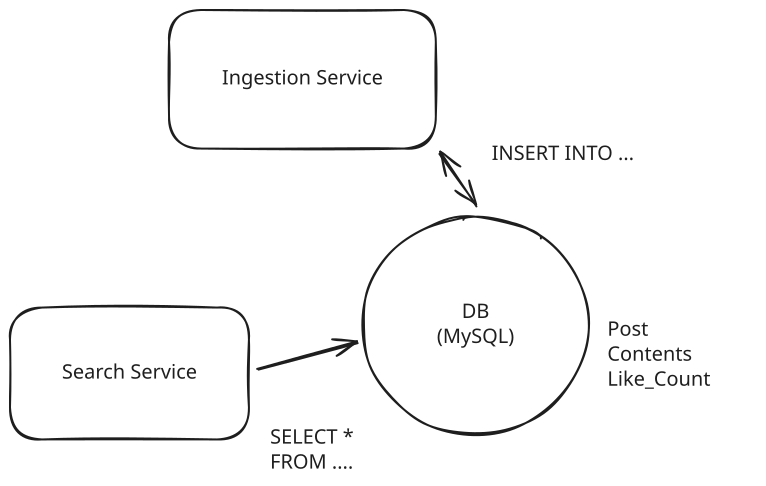
Single Node MySQL
Challenges
Unfortunately, it's terribly slow because our database needs to look at every post and try to see if its contents contain the keyword at query time. Database systems work best when the data is organized to match the requests that are coming in and, without an index, we're in for a world of hurt here searching through petabytes of data.
Some candidates might see the problem here and think that they can solve this via sharding or replication. This marginally improves performance: if we needed to look at N posts and we have M nodes, we now only have to look at N/M posts for each node. But it's still dramatically too slow. This is a dead-end.
Approach
This is a canonical use case for an Inverted Index. You can read more about inverted indices in the linked Deep Dive for Elasticsearch, but the most important idea behind an inverted index is that we can create a dictionary which maps keywords to the documents that contain them. In this case, we'll create a map from keywords to posts!
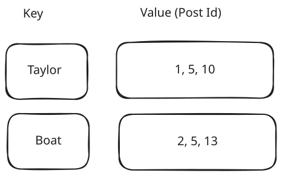
Inverted Index Illustration
When it comes time for search, we can simply grab the key associated with the keyword from the DB and return the associated posts! So far so good.
To keep things simple and fast, let's use Redis for this. Redis will keep these inverted indexes in memory which makes their queries blazing fast. There are obviously durability concerns with this, but they are surmountable and we can handle them with a durable alternative like MemoryDB or in a deep-dive.
We'll keep a list of all the IDs for posts which match a given keyword as a list in Redis. When posts are created, we'll break them apart inside the Ingestion Service into each keyword that could possibly match (a process known as "tokenization") and then append that post's ID to each keyword contained.
Challenges
Note that these post ID lists are going to get very large, especially for common keywords. We'll have to address this later.
We also need to write to many keys for every post since a given post might have 10-1,000 keywords. We'll need to handle some of the scaling challenges associated with this.
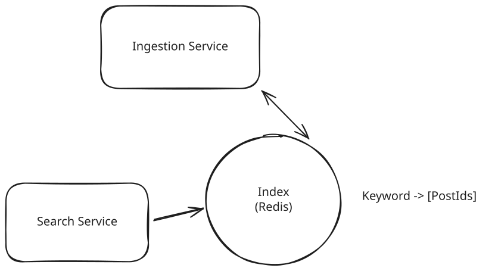
Inverted Index
3) Users should be able to get search results sorted by recency or like count.
Next we'll move to our last requirement which is to be able to sort the results by either recency or like count - that is, if we search for "Taylor" and sort by recency, we want to be able to show the most recent posts that were created. If we sort by likes, we want to see the top liked posts.
Again, we have options here!
Approach
The most naive solution we can employ is to grab all of the post IDs for a given keyword, look up the timestamp or like count, then sort those in memory.
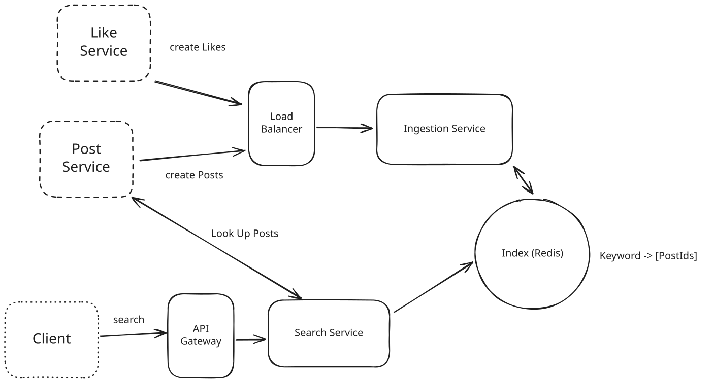
Request-Time Sorting
Assuming we're sorting by recency, let's walk through an example. We're going to first make a request to our index for a given keyword. It will return to us a list of Post IDs. For each of these post IDs we'll query the Post Service for the created timestamp. Once we retrieve these timestamps, we can sort the posts in the Search Service and return to the user.
This is ... not great.
Challenges
The biggest problem with this approach is that the number of Post IDs might be very large for common keywords. If a keyword like "Taylor" has 10s of millions of results, we could easily have payloads returned from our index which are 100s of megabytes. In addition, for each of these results we need to make a lookup - 10s of millions of them. Finally, sorting millions of items at request time adds unnecessary latency to our system.
Approach
A different approach would be to have two separate indexes: one sorted by the creation time and one sorted by the like count (I'll refer to these as the creation index and likes index going forward). Using our Redis-based approach from earlier, we can have separate keys depending on whether we're sorting by Likes or Creation date.
For the creation index keys, we can use a standard Redis list. We're always going to appending to this list and our queries will only be taking from the last elements.
For the likes index, each key can use a Redis sorted set. The sorted set allows us to keep a list of items ordered by a score in the same way that a priority queue or sorted list might work, with the same time complexity of insertions and queries.
When a new post is created, we'll add it to both indexes for every keyword it contains. When a like event happens, we'll update the score in our sorted set for the likes index.
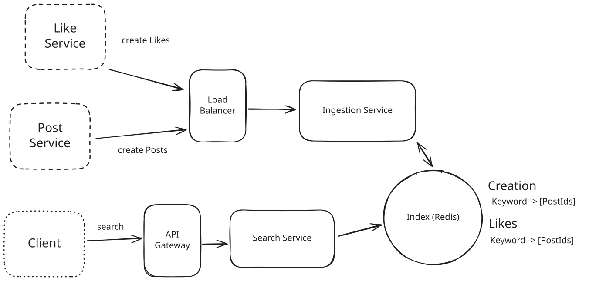
Multiple Indexes
Challenges
We've doubled the amount of storage required for our indexes here. This is a valid tradeoff for the massive improvement in query performance, but it does cost more.
We also introduced a new problem: likes are happening quite frequently. Each like event requires us to update many scores so that the like indexes are up-to-date. This puts a lot of stress on our system, which we'll both note for our interviewer and plan to address later.
Potential Deep Dives
With the core functional requirements met, it's time to dig into the non-functional requirements and other optimizations via deep dives.
Ideally, you've identified potential scaling bottlenecks and issues up to this point. Those make excellent anchor points for your deep dives. You should prepare to be quizzed by your interviewer about various relevant aspects of the system, but some interviewers will expect you to spot your own deficiencies and resolve them.
1) How can we handle the large volume of requests from users?
Our in-memory reverse-index based system is quite fast, but we're going to be handling a lot of traffic. We had some convenient requirements earlier that might make our job even easier. Two requirements in particular:
- We do not have personalization, so if you and I are searching for the same thing with the same parameters, we should get the same results!
- We have up to 1 minute before a post needs to appear in the search results.
Caching sticks out here as the obvious tool for us! Any time we can tolerate stale data and we have duplicate requests coming through, we should consider whether caching is appropriate.
Pattern: Scaling Reads
Caching is a powerful tool to use for systems where we need to scale reads. Read our breakdown on this pattern for more strategies when you're designing a system for heavy read traffic.
Approach
One option for us is to add a distributed cache alongside our search service. This cache would be responsible for storing the most recent results for a given search query. When a search is performed, the service would first check the cache to see if the results are available. If they are, the service would return the results from the cache. If they are not, the service would perform a full search and store the results in the cache for future requests.
We'll want to put an eviction policy on our cache to ensure stale results don't stick around. Since we have up to 1 minute SLA on new posts, we can institute a TTL of < 1 minute on our cache. This will guarantee we're never serving results that might not contain newly created posts.
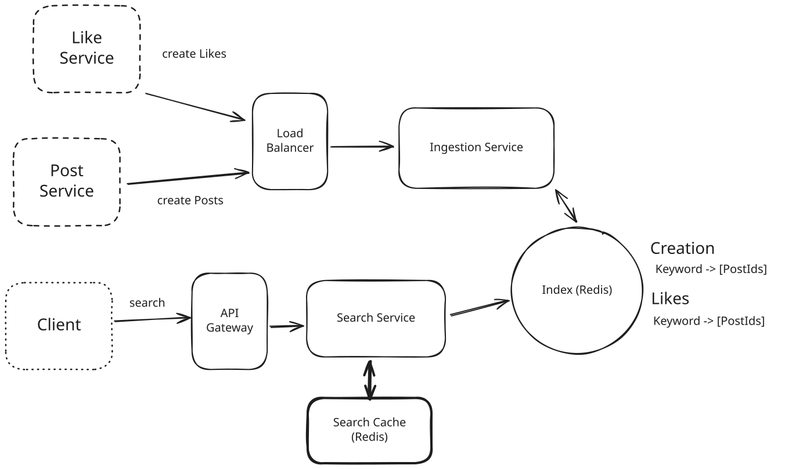
Search Cache
Approach
In addition to the Redis search cache, we can also utilize edge caching via a Content Delivery Network (CDN) like Cloudflare or AWS Cloudfront. Most CDNs operate like a big set of geographically-spread HTTP caches. You configure an "origin" or target for the cache and configure DNS to route through the CDN. If the cache has the item the user is looking for, it can return it faster than almost any alternative option: most CDNs have locations very close to most users. If it doesn't hit the cache, the CDN will proxy the request back to your servers to handle.
Using the CDN here is simple: on the response to our /search endpoint, we can add cache-control headers which tell our CDN when and for how long to cache a result. When a user tries to hit our search service, they'll first go through a geographically local CDN host. In the case of a cache hit, these users will get results in 10s of milliseconds vs the 100s which might have been required if they had to go through our API gateway, to the search service, via a call to the search cache, and back through. If it's not in the cache, we get a request as usual.
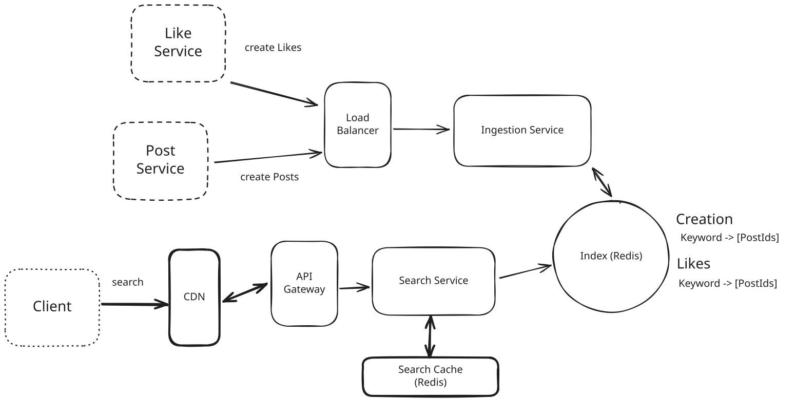
CDN
2) How can we handle multi-keyword, phrase queries?
While sometimes our users might be searching for a single word like "Dog", they may also be searching for strings like "Taylor Swift" or even full excerpts like "All your base are belong". Many search engines support an entire boolean language for specifying queries like "+Taylor +Swift -Red" - let's assume the request here is simple: how can we answer queries for multi-word phrases?
Approach
The least invasive change we can make is to look at the set intersection between every keyword in our query. For a query of "Taylor Swift", sorted by Likes, we would:
- Request the postIds from "Taylor" and "Swift".
- Intersect them - that is, find all the postIds which are in both "Taylor" and "Swift".
- Grab the post contents for each of these postIds and ensure they actually contain "Taylor Swift" and not a disconnected string like "My friend Taylor made a swift exit".
- Return the posts that pass the filter in (3), in order.
Challenges
The biggest challenges with this approach is that the Post ID set for "Taylor" and "Swift" may be very large, which makes it prohibitive to pass over the network and to intersect. If there are millions of posts for each keyword, we could be transferring megabytes of data which need to be put into a hash table and intersected. This can be hard to do while meeting our 500ms SLA.
In the worst case if the keywords are heavily overlapping but the keywords don't appear next to each other as a phrase, we may be filtering out a ton of results which is going to be quite computationally intensive.
Approach
We can improve the read-time efficiency by indexing "bigrams" or "shingles" (in Lucene parlance). The idea is simple: in this sentence:
"I saw Taylor Swift at the concert"
We can create tokens for each pair of words:
- "I saw"
- "saw Taylor"
- "Taylor Swift"
- "Swift at"
- "at the"
- "the concert"
These can be inserted into our "Likes" and "Creation" indexes. When we want to search for "Taylor Swift", instead of grabbing "Taylor" and "Swift", then intersecting the results, we can go straight to the "Taylor Swift" entry and grab the relevant postIds directly.
Challenges
The biggest problem with this approach is that it dramatically increases the size of our indexes. While the number of bigrams in a sentence is linear with the number of words in the sentence, the bigrams are far more unique. "Swift at" is far less likely to occur in other posts, which makes it sparse. So instead of 10m single-word keywords, we might end up with 100m+ indexed keys.
One potential remediation here is to only extract bigrams that are likely to be searched, and fallback to the intersection approach when there is no entry in our index. We might use count min sketch or other probabilistic structures to determine the frequency of occurrence for bigrams across indexed posts.
But these all introduce more complexity and challenges!
3) How can we address the large volume of writes?
The write volume for our system is very high. We have two sources of writes: post creation and likes on those posts. Let's talk about them separately.
Post Creation
When a post is created we call to the ingestion service which tokenizes the post (breaks it down into keywords) and then writes the postId to the Creation and Likes indexes. If a post has 100 words, we might trigger 100+ writes, one for each word.
If a lot of posts are created simultaneously, our ingestion service might get overwhelmed. In the worst case, we might lose posts or events.
We can address this by adding more capacity to our ingestion service and partitioning the incoming requests. By using a log/stream like Kafka, we can fan out the creation requests to multiple ingestion instances and partition the load. We can also buffer requests so that we can handle bursts of post creation. Finally, we can scale out our index by sharding the indexes by keyword. This way writes to the indexes are spread across many Redis instances.
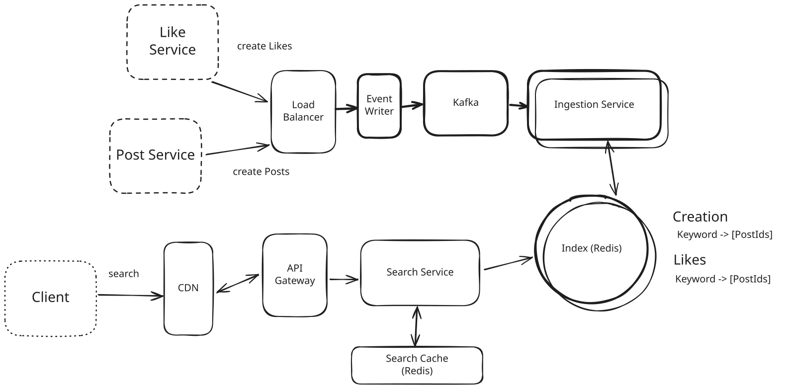
Scaling Ingestion
Pattern: Scaling Writes
Scaling writes is a frequent deep-dive question across interviews. It's good to have a toolkit to use for handling these scenarios. In our Scaling Writes pattern breakdown, we walk you through the options for handling these scenarios.
Like Event
We've partly handled the ingestion of new posts, but our need to index like counts is still the elephant in the room. With the existing system we need to make many writes to our indexes every time a like happens, and, as we discussed earlier, likes happen far more frequently than post creations.
This is a low-hanging opportunity to optimize our system. How can we reduce the number of writes we have to do to our indexes?
Approach
One approach we can take is to batch the writes for likes. Instead of writing every like update to our indexes, we can batch likes for a given postId over a period (like 30 seconds). Then, instead of needing to write 500 times for a particularly viral post, we can make 1 update with an increment of 500.
To do this we’ll need a secondary "batcher" service which accepts like events and aggregates them over a fixed window (maybe 30 seconds) before writing them back to Kafka to be consumed by the ingestion service.
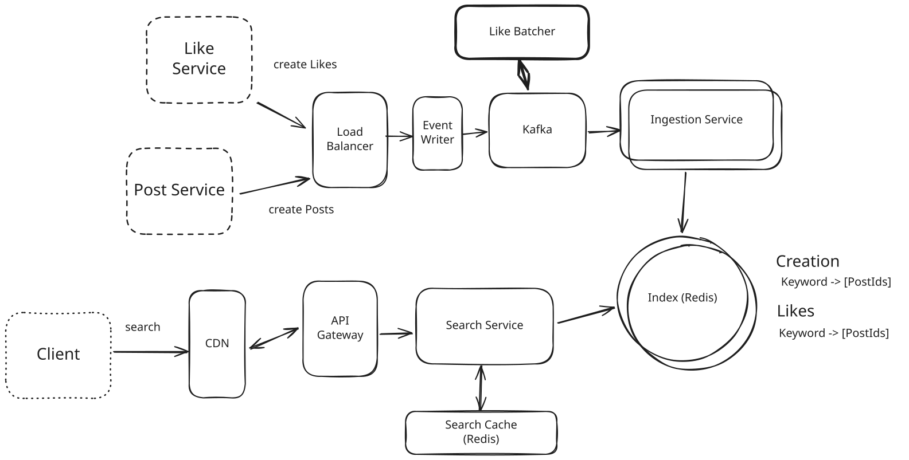
Batch Likes
Challenges
While this approach will significantly improve on the like volume of the most viral posts, it won’t drastically reduce the volume of writes overall since most posts aren't viral. If a post receives 1 like per minute uniformly over a day, even though it receives 1,440 likes over that day we don't get any benefit from the batcher since we still have to write 1 like per minute. Worse, we introduce some additional overhead.
Approach
We can do even better by only updating the like count in our indexes when it passes specific milestones like powers of 2 or 10. So we would write to the index when the post has 1 like, 2 likes, 4 likes, etc. This reduces the number of writes exponentially - we no longer have to make 1000 writes for 1000 likes, we only have to make 10.
But this isn't without a tradeoff! This would mean our index is inherently stale - the data cannot be completely trusted. But the ordering is approximately correct. The post with 10k likes will definitely be in front of the post with 0 or 1 like.
If we want to retrieve N posts for a given query, we grab the top N*2 posts from the Like index. For each post in that list, we query the Like Service for the up-to-date like count. Then we sort using that fresh like count before returning to the user.
In this case our storage is an approximation but our end result is precise - it has the most recent data. This style of two-architecture, where we have an approximately correct service that is backed by a more expensive re-ranking is very common in information retrieval and recommendation systems.
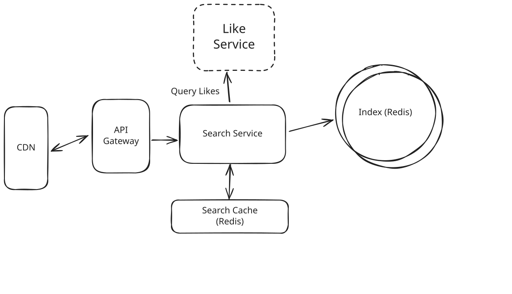
Two Stage
Challenges
- This approach is more complex than the others and will require more engineering effort to implement.
- This necessarily changes the semantics of the like counts within Elasticsearch. We might name them "logLikes" or "approxLikes" to make this clear to developers.
4) How can we optimize storage of our system?
This system is indexing an impressive amount of data, but our users are likely only interested in a vanishingly small portion of it. How can we optimize storage?
First, we can put caps and limits on each of our inverted indexes. We probably won't need all 10M posts with "Mark" contained somewhere in their contents. By keeping our indexes to 1k-10k items, we can reduce the necessary storage by orders of magnitude.
Next, most keywords won't be searched often or even at all. Based on our search analytics, we can run a batch job to move rarely used keywords to a less frequently accessed but ultimately cheaper storage. One way to do this is to move these keyword indexes to cold, blob storage like S3 or R2.
On a regular basis we'll determine which keywords were rarely (or not at all) accessed in the past month. We'll move these indexes from our in-memory Redis instance to a blob in our blob storage. When the index needs to be queried, we'll first try to query Redis. If we don't get our keyword there, we can query the index from our blob storage with a small latency penalty.
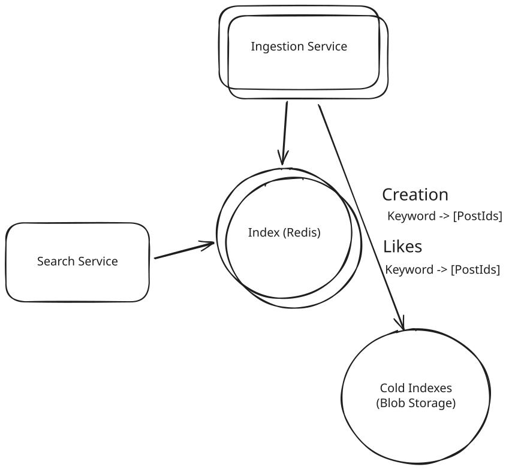
Blob Storage for Cold Indexes
Our full design might look like this, although most candidates (especially Mid-level) won't get through all of these deep dives.
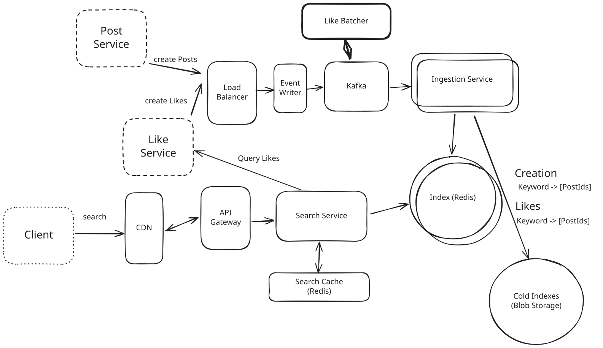
Full Design
What is Expected at Each Level?
There’s a lot of meat to this question! Your interviewer may even have you go deeper on specific sections. What might you expect in an actual assessment?
Mid-Level
Breadth vs. Depth: A mid-level candidate will be mostly focused on breadth. As an approximation, you’ll show 80% breadth and 20% depth in your knowledge. You should be able to craft a high-level design that meets the functional requirements you've defined, but the optimality of your solution will be icing on top rather than the focus.
Probing the Basics: Your interviewer will spend some time probing the basics to confirm that you know what each component in your system does. For example, if you're using a cache, expect to be asked about your eviction policy. Your interviewer will not be taking anything for granted with respect to your knowledge.
Mixture of Driving and Taking the Backseat: You should drive the early stages of the interview in particular, but your interviewer won't expect that you are able to proactively recognize problems in your design with high precision. Because of this, it’s reasonable that they take over and drive the later stages of the interview while probing your design.
The Bar for Post Search: For this question, interviewers expect a mid-level candidate to have clearly defined the API endpoints and data model, and created both the sides of the system: ingestion and query. In instances where the candidate uses a “Bad” solution, the interviewer will expect a good discussion but not that the candidate immediately jumps to a great (or sometimes even good) solution.
Senior
Depth of Expertise: As a senior candidate, your interviewer expects a shift towards more in-depth knowledge — about 60% breadth and 40% depth. This means you should be able to go into technical details in areas where you have hands-on experience.
Advanced System Design: You should be familiar with advanced system design principles. Certain aspects of this problem should jump out to experienced engineers (write volume, storage, lots of duplicate inputs) and your interviewer will be expecting you to have reasonable solutions.
Articulating Architectural Decisions: Your interviewer will want you to clearly articulate the pros and cons of different architectural choices, especially how they impact scalability, performance, and maintainability. You should be able to justify your decisions and explain the trade-offs involved in your design choices.
Problem-Solving and Proactivity: You should demonstrate strong problem-solving skills and a proactive approach. This includes anticipating potential challenges in your designs and suggesting improvements. You need to be adept at identifying and addressing bottlenecks, optimizing performance, and ensuring system reliability.
The Bar for Post Search: For this question, a senior candidate is expected to speed through the initial high level design so we can spend time discussing, in detail, how to optimize the critical paths. At a bare minimum the solution should have both ingestion and query detailed, with a proper reverse index, and appropriate caching strategy.
Staff+
Emphasis on Depth: As a staff+ candidate, the expectation is a deep dive into the nuances of system design — the interviewer is looking for about 40% breadth and 60% depth in your understanding. This level is all about demonstrating that "been there, done that" expertise. You should know which technologies to use, not just in theory but in practice, and be able to draw from your past experiences to explain how they’d be applied to solve specific problems effectively. Your interviewer knows you know the small stuff (REST API, data normalization, etc) so you can breeze through that at a high level so we have time to get into what is interesting.
High Degree of Proactivity: At this level, your interviewer expects an exceptional degree of proactivity. You should be able to identify and solve issues independently, demonstrating a strong ability to recognize and address the core challenges in system design. This involves not just responding to problems as they arise but anticipating them and implementing preemptive solutions.
Practical Application of Technology: You should be well-versed in the practical application of various technologies. Your experience should guide the conversation, showing a clear understanding of how different tools and systems can be configured in real-world scenarios to meet specific requirements.
Complex Problem-Solving and Decision-Making: Your problem-solving skills should be top-notch. This means not only being able to tackle complex technical challenges but also making informed decisions that consider various factors such as scalability, performance, reliability, and maintenance.
Advanced System Design and Scalability: Your approach to system design should be advanced, focusing on scalability and reliability, especially under high load conditions. This includes a thorough understanding of distributed systems, load balancing, caching strategies, and other advanced concepts necessary for building robust, scalable systems.
The Bar for Post Search: For a staff+ candidate, expectations are set high regarding depth and quality of solutions, particularly for the complex scenarios discussed earlier. Your interviewer will be looking for you to be getting through several of the deep dives, showcasing not just proficiency but also innovative thinking and optimal solution-finding abilities. A crucial indicator of a staff+ candidate's caliber is the level of insight and knowledge they bring to the table. A good measure for this is if the interviewer comes away from the discussion having gained new understanding or perspectives. There are a lot of different ways to solve this problem.
Test Your Knowledge
Answer the question below to find your gaps.
Question 1 of 15
When processing millions of like updates per second, which approach reduces write load?
1
Synchronous replication
2
Immediate consistency checks
3
Real-time individual writes to the primary database
4
Batching updates over time windows